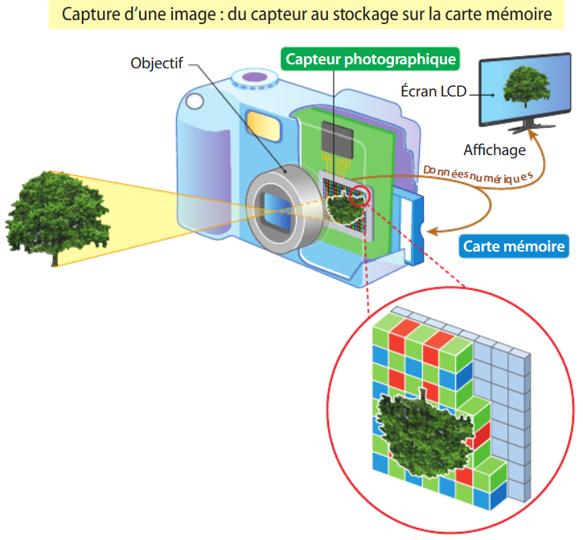
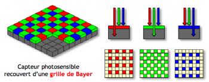

Les pellicules des appareils photo et les cartes mémoires servent toutes les deux à enregistrer des images,mais chacunes d'elles fonctionnent différemment.La pellicule est utilisée dans les appareils photo argentiques et elle se compose d’un film recouvert de substances chimiques sensibles à la lumière.Par exemple si on prend une photo, la lumière impressionne la pellicule et l’image apparaît après un développement en laboratoire.Par contre les cartes mémoires sont utilisées dans les appareils photo numériques.Leur fonction est de stocker des photos sous forme de fichiers numériques.Elles ont l’avantage de pouvoir contenir un grand nombre d’images,elles peuvent être aussi réutilisables et permettre de transférer facilement les photos vers un ordinateur. Ainsi,la pellicule provient d'une ancienne technologie basée sur la chimie,tandis que la carte mémoire correspond à une technologie moderne basée sur l’informatique.On n’utilise presque plus les pellicules des appareils photo car de nos jours la technologie a évoluée et elle est devenue plus pratique et plus économique mais avec les pellicules, il fallait acheter un film,faire développer les photos dans un laboratoire et attendre pour voir le résultat.De plus, on ne pouvait pas effacer les photos ratées. Aujourd’hui,les appareils numériques utilisent des cartes mémoires qui permettent de prendre beaucoup de photos,de les voir instantannément,de supprimer celles qui ne sont pas bien prises et de les partager simplement sur un ordinateur ou sur Internet.C’est pour toutes ces raisons que les pellicules sont de moins en moins utilisées.
Dans les appareils photo numériques,on trouve que le capteur photo peut remplacer la pellicule des anciens appareils argentiques.Alors que la pellicule est un film recouvert de substances chimiques sensibles à la lumière,le capteur photo est un composant électronique créer spécifiquement pour capter la lumière et la transformer en image numérique.Par exemple lors de la prise d'une photo, la lumière entre dans l’appareil et arrive sur le capteur photo,qui permet d'enregistrer l’image sous forme de données numériques.Ces derniers vont être stockées sur une carte mémoire. Contrairement à la pellicule, le capteur photo ne nécessite pas de développement en laboratoire et permet de voir instantannément la photo.Tout de même,le capteur photo et la pellicule posséde le même mais avec une technologie plus évoluer et plus efficace.

Un capteur photo est une surface photosensible.Ce dernier est constitué d’un grand nombre de photosites qui sont de petites cellules sensibles à la lumière.Chaque photosite reçoit de la lumière qui provient du capteur,puis l’intensité lumineuse captée se convertie en tension électrique.Plus la lumière reçue est forte,plus la tension électrique produite est élevée. Cette tension est ensuite transformée en signal numérique pour former une image numérique. L’ensemble de ces photosites fonctionne donc comme une mosaïque:chacun capte une petite partie de la scène et toutes ces informations réunies permettent d’obtenir une image numérique détaillée et précise.
La tension électrique forméé par un photosite ne reste pas sous forme électrique mais elle doit être convertie en nombre grâce à un convertisseur analogique-numérique. Après avoir reçu la lumière, chaque photosite transforme l’intensité lumineuse en tension électrique, puis cette tension est mesurée et transformée en nombre.Ce dernier représente la quantité de lumière reçue par le photosite et il est associé au photosite correspondant pour former un pixel de l’image.L’ensemble de ces nombres constitue une image numérique et ils sont ensuite stockés dans la mémoire de l’appareil photo, principalement sur une carte mémoire afin de pouvoir conserver, afficher et transférer la photo.Cependant, si on se contentait de ce système, les images seraient uniquement en noir et blanc car chaque photosite ne mesure que l’intensité lumineuse totale mais pour gérer les couleurs,il faut avoir un filtre coloré devant chaque photosite pour permettre à certains photosites de capter le rouge, d’autres le vert, et d’autres le bleu, afin de reconstituer correctement toutes les couleurs de l’image finale.Pour cela,on trouvera trois types de filtres:des filtres "rouges"(qui laisseront uniquement passer la lumière rouge),des filtres "verts"(qui laisseront unquement passer la lumière verte) et des filtres "bleus"(qui laisseront passer uniquement passer la lumière bleue).Alors,à chaque photosite,on doit associer soit un filtre rouge,soit un filtre vert,soit un filtre bleu.

D'après la grille de Bayer,les filtres sont appelés "Bayer"et ces derniers sont constitués de 50% de filtres de vert,de 25% de filtres de vert et de 25% de filtres bleu dont l'objectif est d'imiter la physiologie de l'oeil humain(l'oeil est plus sensible au vert qu'au bleu et rouge).Dans ce capteur il y a 50% des photosites enregistrent uniquement la lumière verte,25% des photosites enregistrent uniquement la lumière rouge et 25% des photosites enregistrent uniquement la lumière bleue.Une photo contient des informations qui permettront de créer un pixel de l'image et ces informations proviennent des photosites du capteur photo.